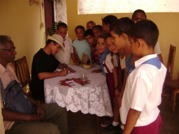

Una Seleccion de Otilio Carvajal:
(Internationales Poesie-Festival von Havanna. Sede: Villa Clara)
Esta vez la movida desde Santa Clara, promueve de manera distinguida al poeta:
Luis Pérez de Castro (Pinar Del Rio, Kuba, 1966). Historiador, abogado, Dichter und Erzähler.
Residencia: Calle San Miguel, Nicht. 192 Altos. Entre Alemán y Central.
Santa Clara, C/P – 50100. Villa Clara, Kuba.

Publicaciones:
Geschichte: . Nostalgia del cíclope, Editorial Libre Idea, Mexiko 2004. Mientras arde en silencio mi voz, Ediciones Capiro 2006. Epístola de un loco, infantil, Ediciones Mecenas 2007. Rapsodia del erudito, Ediciones Capiro 2007.
Poesie: Confesiones del Abad, Ediciones Matanzas 2005. Testimonio del Pagano, Ediciones Unicornio 2007. Ultimo e-mail inédito de Faulkner, Ediciones Matanzas 2008. Como un manso animal, Ediciones Capiro 2012. Digo lo que callo, Editorial El barco ebrio, Madrid, Spanien 2013.
Antologías:
Poesie: Neruda, 100 Jahre, Australia 2005, Nosside Caribe, Letras Cubanas 2006, Noche cálida en Santa Clara, Editorial Capiro 2010 und Faz de tierra conocida, Letras Cubanas 2010.
Narrativa: Los cuerpos del deseo, Neo Club Ediciones, Miami, USA 2012.
Premios:
Mercedes Matamoros, cuento 2003.
Pablo Neruda, Poesie, Australia 2004.
Poesía Amor Varadero 2004 und 2008.
Batalla de Mal Tiempo, Poesie 2004.
Pita Felix Rodriguez, Poesie 2006.
Farraluque, narrativa erótica 2007.
Fragmentos del libro
Ellos fueron a la guerra
Luis Pérez de Castro
sayli, han y luisito. hijos míos: no concibo al ser humano sin contradicciones sin la destreza del cuestionamiento sin las predicciones donde se instala su más honda lágrima. pero, aunque sufran de hastíos inacabables, eviten la GUERRA o, simplemente, el anclaje demasiado dúctil de su talismán. busquen, como yo, la felicidad. ah no permitan que nunca muera.
las cosas que había
llegado a conocer durante aquella guerra
no eran nada sencillas
ernest hemingway
Confidencia(s)
siluetas sin orden presentido
convivimos entre animales sin cabeza para pensar
chanchullos desprovistos de la luz
testigos mudos con un ligero temblor
miserias roturas corrupciones
con huellas tan antiguas como el hombre
ah justo el hombre al borde del abismo
con la meticulosidad de la duda
del ser o no ser frente a un pelotón de fusilamiento
sin más fusil que un cigarro
sin otro disfraz que el vértigo
sin otro símbolo que la traición
sin más delicia que cagarse en los pantalones
convivimos ardiendo entre epitafios clandestinos
y el estrepitoso defecto de una inocencia
con un lirismo sin igual
convivimos acribillados por el pánico
por el asma reír de un duende sin identidad
como el hombre al borde del abismo.
¿seremos todos?
otras puertas. otros espíritus
…quién dijo que habrá sombra
bajo las arquitecturas
las incapaces de aplacar el viento
el ruido y la pólvora
los huesos disueltos en las calles.
quién dijo sorpresas mutaciones
oscura terquedad consignas
sangrando bajo las arquitecturas
frágiles
frente a la perpetuidad siniestra de los cuchillos.
quién dijo existo
luz sombra
pueblo difuminado en la nada
vida
frente a los ojos placidos de los muertos
de su osamenta sobre tarimas
desdibujando el círculo de los vivos
cerrándolos.
los ciegos brindan
los locos sonríen
se agotan las interrogantes.
conjeturas sobre el puerto
asaltan las dudas
se entroncan en los rincones
como indescifrables comandos de combate
carcomen la influencia corrosiva
la almidonada opinión del burócrata
la amarga sobriedad del que dijo probar
y pasta en los potreros.
siempre se supo
que era un riesgo la inocencia
fingir el recuerdo
el inútil salto a un futuro inadmisible
siempre se supo
de la memoria aprisionada contra el techo
del decir salta salta
sin tener en cuenta
el apático gesto del que te rodea
te bendice te aplasta.
asaltan las bofetadas
la perspectiva de una herencia individual
pesada y profunda como la sombra
de los ojos que simulan el llanto
la estirpe ignorada de sus antepasados.
pródigamente el saqueo domina el vacío
mientras
los fusiles son barcos aventados por el viento.
extraña sensación la del inquilino
sobre la multitud un loco
y la invisible mueca de varios fracasados
también la invitación
para masturbarse en la prodigiosa carcajada de un ministro
en la desnudez intacta del necio que dijo ser dios
y mordió el pezón de la virgen maría
de su amantísima madre tendida en el patio
una pala y un pico pudieron ser la salvación
el evidente zarpazo del dime que te diré
otro comentario otra patada
otro ramo de hierbas sobre la mesa
y la orden letal:
-la multitud yace en las alambradas
custodiada por soldaditos de papel
coman sin abrir los ojos
sin agradecer la mano que los alimenta.
la multitud es única
entre perdigones y soldaditos de papel
pero única.
un loco un ministro y un necio
se persignan a la entrada de una iglesia vacía
dios los mira y parece sonreír.
otras sucesiones
detrás de cada puerta un dolor
un rostro una orden otras cifras
impávidas entre las hendijas
gimoteando por la ausencia de la luz
detrás de cada puerta la gravedad
un transeúnte una señal un pestillo
ensartando la contraseña de un mendigo
de cuantos son objetos o sujetos
de una igualdad asomada a las alcantarillas
detrás de cada puerta adán
una mujer llamada eva el arca de noe
a espera de un cuño y una firma
para poder zarpar
para salvarse.
detrás de cada puerta los disfraces
perdura el dolor.
sin evidencias
los niños se aferran con desdén
al trapecio de sus sueños
ven caer su sombra
hecha añicos bajo el árbol
donde sus padres cavaron un hueco
y defecaron los por qué sin respuestas
los perfiles de otra niñez sin nada que alegar.
los niños crecen
se aferran a cada peldaño
al grito al odio
al anzuelo tirado con ternura
crecen sin importarles la humedad
las crisis los pescozones
déjenme preguntar dicen
déjenme preguntar repiten
dé-jen-me pre-gun-tar murmura el eco
los padres no entienden
los padres apabullan las costumbres
el sinsentido de un ejemplo torpe
de una vida (sin) imitación.
los niños se lanzan a las calles
se acuclillan en las esquinas
y defecan sin un rasgo de pudor.
los niños destierran a sus padres.
desde el centro de una ciudad imaginada
la perfección se hizo cuestionable
el riñón amputado la decisión
del médico sin un regalo que aceptar
el ultraje la bayoneta y la pólvora
también se hicieron cuestionables
el administrativo sin lentes
para no ver el pelotón de fusilamiento
la pasión soberbia de dios
con los ojos hediondos por tanta porquería
el andamiaje el límite inconexo
las acrobacias de un niño desnudo
el gesto de abandono la patraña
la premura del dirigente vitalicio
el despojo la alquimia
el llanto por cuánta moneda sin valor
la vida da un manotazo
la vida luz y farsa
la vida otro suceso
la vida sin rastro
sin perfección
también cuestionable.
reverso de la moneda
…tan sólo se oye el rumor
el llanto y la patada
la mortal costumbre de callar
ante la recompensa
ante el filo del cuchillo
y el reclamo final del hacha
sin más argumento que hacernos leña
tristes proclamas de un mundo hecho trizas.
tan sólo se oye el rumor
de una historia que no todos cuentan igual
de ovejas mordisqueándose los agravios
y el dictamen final del verdugo:
-dije que bajarán la cabeza sin preguntar
por qué cuándo ni cómo.
…tan sólo se oye el rumor
indescifrable.
del riesgo, de la duda y otros atributos
la multitud no escuchó las plegarias
el run-run de la muerte
el soplo y la envidia
el misterio desdibujando el círculo
la coartada sin anteojos
el brindis por la paz de sus huesos
sin luz sin sombra
asqueados por tanta aparente bondad
la multitud se masturba bajo un llanto atroz
sonríen arden
hociquean en el traspatio
huyen de tantas bocas
tantos discursos
tanta mierda encristalada en la duda
la multitud
somos uno la otra mitad
la desgastada en la hoguera
los que ardemos en la cruz.
de todos modos sigue sin escuchar.
declaración final de pilatos
salir y apoyar las consignas
fue la primera orden
sentarse bajo la luna
no pedir y masticar algodones
fue la segunda orden
decir sí a todo
amanecer con los labios y los ojitos pintados
y no cantar tengo la manito quemada
fue la orden general
la explosión alcanzó a cada soldado
embarró cada rostro
cada orden salida bajo el árbol
de una simple ceremonia
y una condecoración pos-morten
-las órdenes se cumplen
decían unos
-del sueño nunca se regresa
y el futuro se asfixia bocabajo
decían otros
imaginar la mesa servida
deambular en pijama y no decir:
-quizás a lo mejor quién sabe
fue la voluntad
de los que colgábamos del eco del disparo.
logramos sobrevivir como animales
domesticados por manifiestos.
declaración final de robinson crusoe
-el camino es largo
aún no hemos llegado
decía mi padre
-pasar el trapo
bajar la cabeza
y obedecer apesadumbrada por la burla
decía mi madre
mis padres decapitaban con gestos prehistóricos
cada señal aproximándose a las aguas
el estímulo de lanzarme a la mar
e inscribir mi nombre allende las costas
mis padres abofeteando el egoísmo
las ruinas la traición
que supone abandonar la patria grande
mis padres siempre melancólicos
íntegros sobre otro barco desconocido
mis padres en silencio
sin más bondad que una flor
y el eco de su propia voz retrocedida
mis padres en silencio
como tristes comediantes en su oscura soledad.
yo soy el camino
el trapo
el que baja la cabeza
y obedece obedece
apesadumbrado por la burla.
monólogo interior
-los hombres mienten
una y otra vez
asumen la infinita gestión de la mentira
vociferó cristo
y la armonía fue un roce
apenas un suplicio que asciende
marca y muele
los hombres adolecen de su figura
de su memoria perdida en un hueco
repleta de sentencias gritos
sucesos intrascendentes al revés
como presos encandilados por colillas de cigarros
presos al revés insisto
a cara o cruz sin fundamento
digo yo una y otra vez
-los hombres mienten
atravesados o no por otros dardos mienten
y al final como niños ingenuos
niegan toda participación
concluyó cristo.
pasión de augusto siglos después
…sin embargo
de este lado del mar todo puede suceder:
el abandono
la propiedad transitoria
algún abrigo tendencioso
la bondad como carnada
el hedor el ultraje
y el egoísmo con un tenue murmuro por las calles
el testimonio de héroes y piratas
de convictos e intelectuales
consumidos por la angustia
un alto un bajo imperio
y césar reeditando su sentencia final:
-antiguo soy
pero mientras mis vísceras resistan
tiraré del carro solo
la suerte está echada
de este lado del mar
¿existirán espacios dónde no mortifique la duda
dónde atarnos a la cruz
y esquivar la calamidad de la razones
excesivamente razonables
que nos imponen?
peregrinos somos en este reino de adversarios.
oteo, transfiguraciones
en medio de la plaza una bandera
un perro y un turista
un ramito de flores un niño
un árbol anudado al pavimento
una música casi fúnebre
un anciano asediado por insectos
una prostituta un militar
y un mendigo
difícil ha sido captar la imagen
todos se cuidan
huyen de sí mismos
transfiguran la feroz palabra
la orden rigurosa del ministro
que sostiene los hilos
el sorteo final de un riesgo irrisorio
sus destinos.
el oteo quedó incompleto
inversa la luz
la ceremonia dentro del cuerpo.
prodigas palabras las del transeúnte
el llanto implicó las opiniones:
levantemos peldaños que nos diferencie
el delirio es único
necio para los flojos
bienaventurado al paladar de los fuertes
desposemos a las novias
el color verde refugiado entre sus muslos
al proyectil cabizbajo
mareado por el hedor a pólvora
por ordenes que no encuentran cabeza
ni cuerpo que golpear
el llanto implicó la caída del muro
de las opiniones las desigualdades
el inútil esfuerzo de los fuertes
y el delirio sin apariencia de los flojos
aparentemente implicó la caída
las desapariciones las torceduras
de una ley sin rostro lista para la horca
el llanto fue la manchita
el gesto que lo indecible apenas roza.
-los hombres no lloran
exige otra ley también sin rostro.
semblanza del proscrito
tú
yo
él
nosotros
calle abajo oprimidos por un portazo
por la voz de un espantapájaros
inmóvil contra la pared
un espantapájaros pendenciero
como el singular o el plural
rectifico como
tú
yo
él
nosotros
oprimidos por infinitos portazos
por el derrumbe de un sueño
también inmóvil
contra la pared.
no habrá combinación
ni rótulos que indiquen el camino
seguiremos
tú
yo
él
nosotros
con el alma astillada calle abajo
arropados por la costumbre.
si soy o fui sólo una fórmula
una mujer reza
enganchada por el garfio de una grúa
un niño mira y parece sonreír
un niño sobre un caballo
biznieto de un general mambí
hijo primogénito advirtiendo
el olvido de una guerra sus soldados
las esferas de sus ojos
encharcados por el desagüe de la sangre.
una mujer reza
más tarde le dan la espalda
le dividen el tiempo en dos
y la obligan a bailar
a infectarse en el vacío
un niño toca una trompeta
perturba con la melodía
con el toque a degüello
que nadie quiere entender
la mujer descansa en el retrato.
el niño abre los brazos
insiste en echar a volar su caballo
toca la trompeta
aunque nadie hace por entender
toca la trompeta
y rompe la confusión.
jonás mil años después
era evidente
la culminación de la marcha
el consejo bajo falsa nomenclatura
el aviso cierren las piernas a la muerte
al padre al hijo y al espiritusanto
también se hizo evidente
el consuelo de la burla
el absurdo diciendo sí necesito
el silencio
en franca huída ante el desengaño
el fiasco el ruido la soledad
el premio enmascarado
la predicción inexacta
y la agilidad del fuego
para regresarlo todo a ceniza.
imagen y semejanza
hubiese dictaminado dios mil años antes
hoy sólo es la culminación
la evidencia de no tenernos en cuenta.
alumbramiento de jeremías ante el fuego
tierra a los acontecimientos
a los aplaudidos en trajes
palmaditas salud suerte
mucha suerte a su adusta vocación
tierra a los títeres en las calles
sin otra coincidencia que la palabra abominable
religiones historias oficios de próceres
sin otra coincidencia
que el resplandor de sus fachadas
sin estatutos que regulen el intento
la ceremonia de romper el interrogatorio
echar tierra y… saltar
sobre cada argumento inaconsejable
biografías sucesiones de cifras
echar tierra saltar
echar tierra saltar
saltar aunque nos acribillen
nos crucifiquen en al cruz
prohíban llamarnos héroes.
retrato de un hombre muchos años después de cristo
pereceremos
bajo la artimaña de un perfume barato
no habrá discursos
disparos de salvas
documentales
sarcásticos buenos para no olvidar
hijoeputas limpiarán el pavimento
para sentir el aroma de nuestros rastrojos
limpiarles las lágrimas a nuestras mujeres
decir fue un accidente
y fornicarlas en honor al amigo perdido
no habrá además
antes
después
quizás
quién sabe
algún día
no sostendremos la pregunta:
¿cuál de las desgracias nos trajo tanta calamidad?
como todo suele ocurrir pereceremos
así no más
parezca este poema un jodido pesimismo o no
así no más
oh luz adversa
cerrojo ríspido que olvidamos.
.